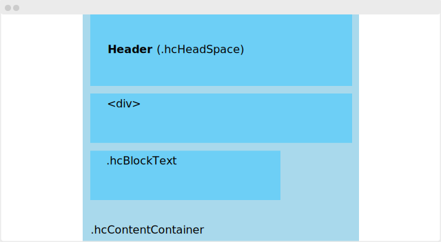
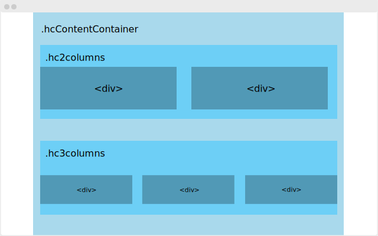
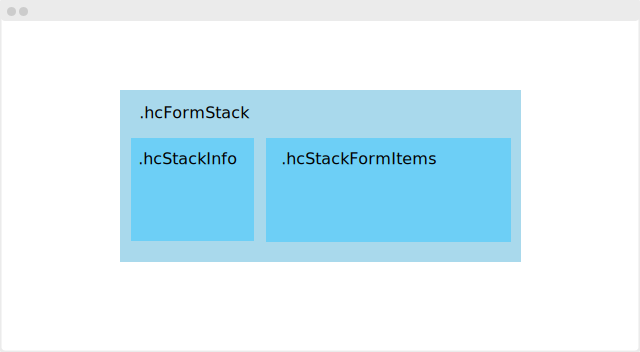
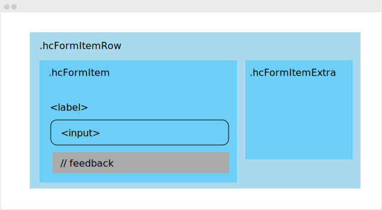

HuC Utility CSS
Introduction
This framework is build for developers of the HuC Digital Infrastructure Teams. It is build on following directives:
- Unburden HuC developers with design decisions and responsive behaviour;
- Create a default well designed webpage or tool;
- Keep our tools consistent and recognizable as HuC tools.
Using the stylesheet
Add the following link tag to the <head> of your HTML page:
<link rel="stylesheet" href="https://huc-css-util.netlify.com/css/huc-util.css">
If your'e building a tool for the Huc, one of the inhousing institutes or Clariah you can use branded css files: huc-util-huc.css, huc-util-huygens.css, huc-util-meertens.css, huc-util-iisg.css or huc-util-clariah.css
<link rel="stylesheet" href="https://huc-css-util.netlify.com/css/huc-util-huc.css">
With this stylesheet the site will use basic Roboto font in 17 pixels.
- Normalise
- Roboto font 17px
- White background
Basic interface utilities
Here you'll find basic building blocks for a page. These utilities will give your site hierarchy, clarity and focus.
Page blocks
Page blocks help to build a responsive and organised page. All page blocks must be wrapped in a container with the class .hcContentContainer.
<div class="hcContentContainer">
<div>
// some content
</div>
</div>
Alle child elements inside the .hcContentContainer behave the same way. It prevents the content to spread all over the screen. It give content a maximum with of 1200 pixels. On smaller screens it take 100% of the width.
Text block
Text blocks gives content a nice readable width on all screens. Add the class .hcBlockText to an element and all headings and paragraph tags align.
<div class="hcContentContainer">
<div class="hcBlockText">
<h2>Summary</h2>
<p>Here's a summery of all the above</p>
</div>
</div>

Column block
.hc2columns
.hc3columns
.hc4columns
.hc5columns
.hc6columns

Margins
Margins help to create focus but keep tranquility.
Basic left and right margin
The .hcBasicSideMargin prevents content from hitting screen edge. It enhances the readability and understandability of the content.
<div class="hcBlockText hcBasicSideMargin">
<h2>Summary</h2>
<p>Here's a summery of all the above</p>
</div>
Margin bottom
Use the margin bottom to separate elements and blocks from each other.
.hcMarginBottom1
.hcMarginBottom2
.hcMarginBottom3
.hcMarginBottom5
Margin top
Use the top
.hcMarginTop1
.hcMarginTop2
.hcMarginTop3
.hcMarginTop5
Backgrond Margin
.hcMarginBackground
Header margin
Use .hcHeadSpace to create a extra space around the header. The total takes up to 25% of the page.
Alignments
.hcAlignHorizontal
.hcAlignVertical
.hcAlignLeft
.hcAlignRight
.hcAlignCenter
Headers
Labels
Text
Interface text
Small text
.hcSmallTxt
Grey text
Use it to make text text attentional and less scannable
.hcTxtColorGreyMid
Large text
Forms
This utility provides a default form markup, and a way to organise forms.
Default form layout
By adding the .hcForm class forms and child elements automatically get a uniform HuC look. They get a bigger size and a distinctive background color.
Form stack
To organise your form one can use form stacks. A stack consists of a information part and a form part. The information part contains a header and a description. The form part has one or more form fields.
<div class="hcContentContainer">
<div class="hcFormStack">
<div class="hcStackInfo">
<h2>Name of the stack</h2>
<div class="hcTxtColorGreyMid">
// a description text
</div>
</div>
<div class="hcStackFormItems">
// Form items
</div>
</div>

Form items
Every field in the stack
<div class="hcFormItemRow hcMarginBottom2">
<div class="hcFormItem">
<label class="hcLabel" for=""> // Label text</label>
<input type="text" id=""> // Or an <select> or <textarea>
<div class="hcSmallTxt hcTxtColorGreyMid">
// Text for feedback
</div>
</div>
// space for extra info or provenance
<div class="hcFormItemExtra hcSmallTxt">
<div class="hcProvenanceComp">
<label class="hcLabel" for="provFor">Provenance</label>
<textarea name="name" class="hcProvenanceText" id="provFor"></textarea>
</div>
</div>
</div>

Display multiple items
In this section you'll find some utilities to organise multiple items. For example: list items, result items and cards.
List
To keep (namely) text and other content readable a margin is a great help..basicSideMargin
Results list
Cards
Row
Interaction
Buttons
Functional Elements
Aside panel
AsidePanel
- Navigation
Isolated Page header
You can use the .headSpace tag to create a isolated header with big margins around it.
Layouts
Basic content with sidebar layout

Basic centered content with fixed sidebar layout